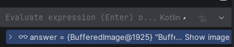

Load SmallImage into IntelliJ
SmallImage is supplied by an IntelliJ plugin. The plugin can turn an image on your clipboard into Kotlin code and set up the supporting library files for the project.
- Download the SmallImage plugin zip file.
- In IntelliJ's top menu bar, choose Help, then Find Action.
- Search for Install Plugin from Disk, choose it, and select the zip file you downloaded. Follow IntelliJ's restart prompt if it appears.
- Copy an image to your clipboard. In a Kotlin file, right-click where you want the value and choose Paste Image Literal.
Using Paste Image Literal adds the SmallImage library at src/edu/wpi/intro/SmallImage.kt and saves the pasted image under resources/smallimage.images/. The library's package is edu.wpi.intro; a file that uses its image functions normally begins with:
import edu.wpi.intro.*Images Are Values
In this library, the Image type describes simple values that can be given and returned from functions similar to String or Int. Each operation below returns a new Image value. Giving intermediate images names makes a picture-building expression easier to read and inspect.
Create an initial Image
Paste an Image Literal from your clipboard
Go to the internet or your photos app and copy an image to your computer's clipboard (right-click, copy).
For example, type val myImg =, place the cursor immediately to the right of the equals sign, then right-click and choose Paste Image Literal. The pasted image gets a randomly picked id string and IntelliJ completes the value definition for you:
val myImg = img("734b8a20-66c2-44b7-836e-5305bdedde39")The plugin saves the clipboard image as 734b8a20-66c2-44b7-836e-5305bdedde39.png in resources/smallimage.images/. The img call loads that saved image and produces the Image value named myImg.
Use functions to create image values
rectangle
rectangle(width, height, mode, color) creates a rectangle. Width and height are positive pixel counts. The mode is "solid" or "outline"; the color can be a name such as "tomato" or a Color value.
val banner = rectangle(180, 40, "solid", "tomato")
val border = rectangle(180, 40, "outline", "black")emptyImage
emptyImage(width, height) makes a transparent image of the requested positive size. It is useful as a blank starting canvas or a spacer.
val spacer = emptyImage(24, 40)Arrange Images
above
above(image1, image2, ...) stacks one or more images from top to bottom. Its optional horizontal argument is "left", "center", or "right".
val centeredStack = above(
rectangle(120, 24, "solid", "gold"),
rectangle(80, 24, "solid", "navy")
)Without the optional argument, the images are centered horizontally.
val stacked = above(
rectangle(120, 24, "solid", "gold"),
rectangle(80, 24, "solid", "navy"),
horizontal = "left"
)beside
beside(image1, image2, ...) places one or more images from left to right. Its optional vertical argument is "top", "center", or "bottom".
val sideBySide = beside(
rectangle(36, 60, "solid", "blue"),
rectangle(36, 60, "solid", "white"),
rectangle(36, 60, "solid", "red")
)Without the optional argument, the images are centered vertically.
val flag = beside(
rectangle(36, 60, "solid", "blue"),
rectangle(36, 60, "solid", "white"),
rectangle(36, 60, "solid", "red"),
vertical = "center"
)overlay
overlay(top, bottom) centers the first image on top of the second. The returned image is large enough to contain both images.
val sign = overlay(
rectangle(80, 20, "solid", "white"),
rectangle(140, 70, "solid", "navy")
)Transform an Image
flipHorizontal and flipVertical
flipHorizontal(image) mirrors an image left-to-right. flipVertical(image) mirrors it top-to-bottom. Both return a new image with the same dimensions as the original.
val reflectedLeftToRight = flipHorizontal(flag)
val reflectedTopToBottom = flipVertical(flag)rotate
rotate(degrees, image) rotates an image counterclockwise. The result expands when necessary so the rotated image is not clipped.
val turned = rotate(90.0, flag)Image, so it can become an input to another one. For example, rotate(90.0, overlay(top, bottom)) first overlays the two images, then rotates the combined result.View an Image While Debugging
Images are values, so IntelliJ can show them when execution stops at a breakpoint. Put a breakpoint on a line after the image has been created, then start the program with Debug rather than Run.
val answer: Image = overlay(
rectangle(60, 60, "solid", "gold"),
rectangle(100, 80, "solid", "navy")
)
println(answer.width) // Set a breakpoint here.When the debugger stops, find answer in the Variables pane. Next to its BufferedImage value, click Show image. IntelliJ opens a preview of the image value.

Image value in the debugger.